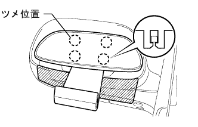
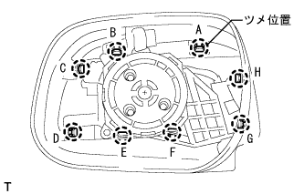
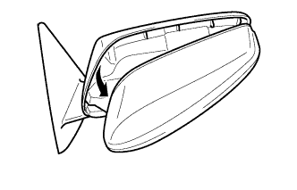
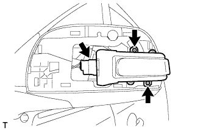

サイドターンシグナルランプASSY LH 取り外し |
| 1. アウタリヤビューミラー LH取りはずし |
|  |
鏡面上部を押し下げ、鏡面を傾ける。
図に示す位置に保護テープを貼る。
ルーフモールディングリムーバーを使用して、ツメ4箇所のかん合をはずす。
| 2. アウタミラー カバー LH取りはずし |
|  |
ツメA·B·C·DをアウタミラーカバーLH裏側から押し浮かせる。
浮かせた所をきっかけにし、ツメ8箇所のかん合をはずす。
|  |
アウタミラーカバーLHがサイドターンシグナルランプASSY LHに当たらないように、アウタミラーカバーLHを図のように取りはずす。
| 3. サイドターンシグナルランプASSY LH取りはずし |
|  |
スクリュー2本で、サイドターンシグナルランプASSY LHを切り離す。
コネクターを切り離し、サイドターンシグナルランプASSY LHを取りはずす。